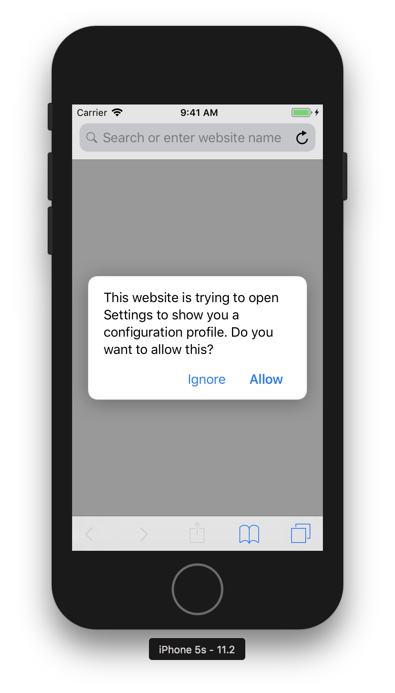
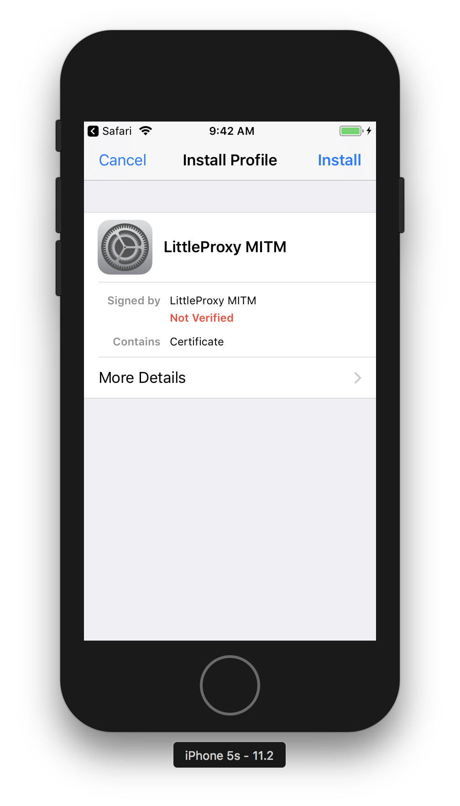
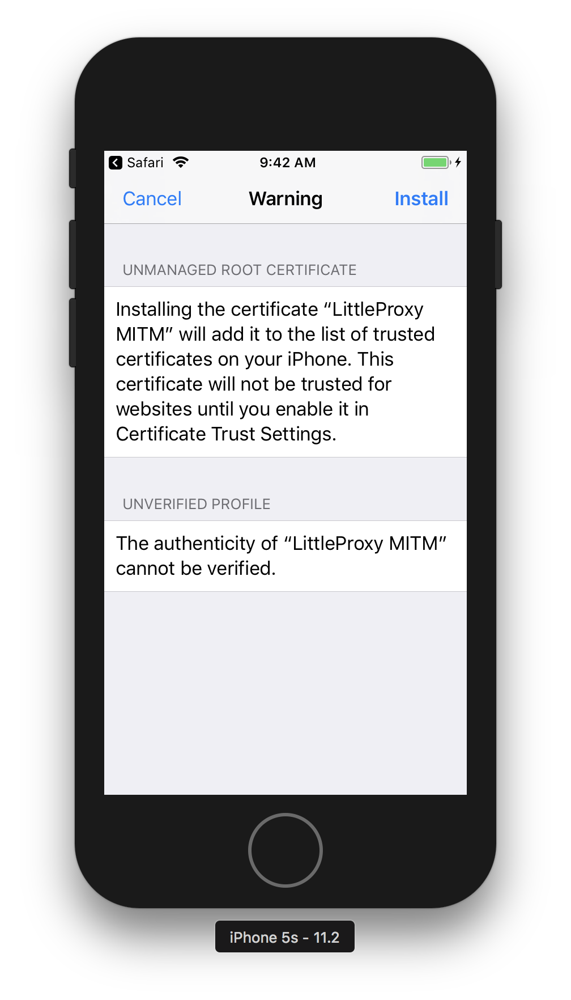
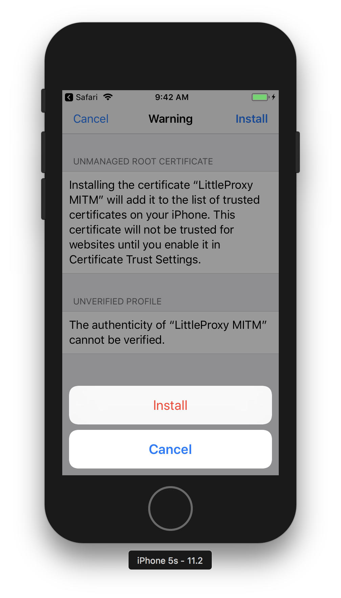
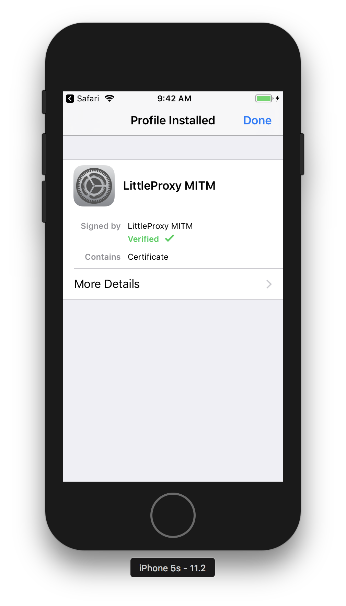
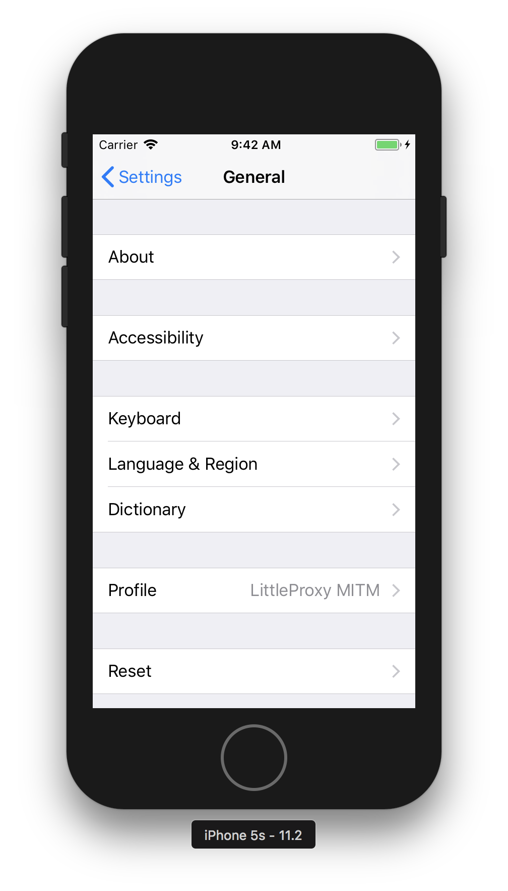
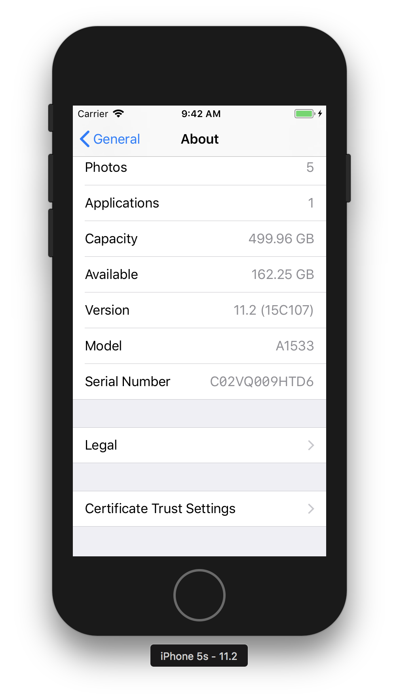
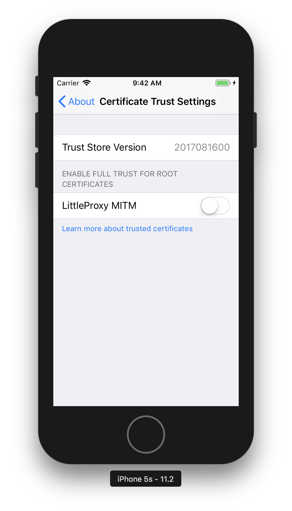
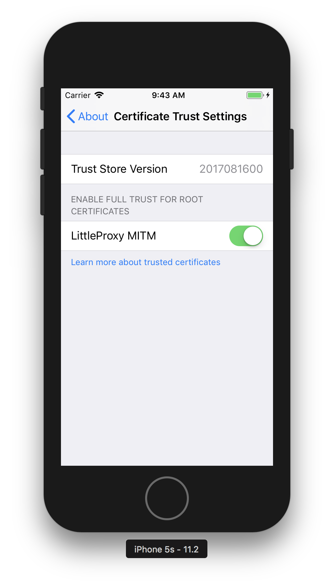

Trusting the root certificate for debugging proxies such as BrowserMob-Proxy on iOS is quite strict in its forward direction. You can download the certificate from ca-certificate-rsa.cer using Device’s Safari, or you can drag the file into the Simulator as well.
-
Tap on Allow to install the cert
 -
Tap
Installon the upper right
 -
Again, tap
Installon the upper right
 -
Install
 -
Once verified, tap on
Done. The certificate is installed
 -
To trust the certificate as Root Certificate, goto
AboutinGeneral
 -
Scroll down until you see
Certificate Trust Settings
 -
Toggle on the
LittleProxy MITMto trust it
 -
Tap
Continueto trust it as Root Certificate
-
Done. Now all traffic can be intercepted by the proxy without any complaint
